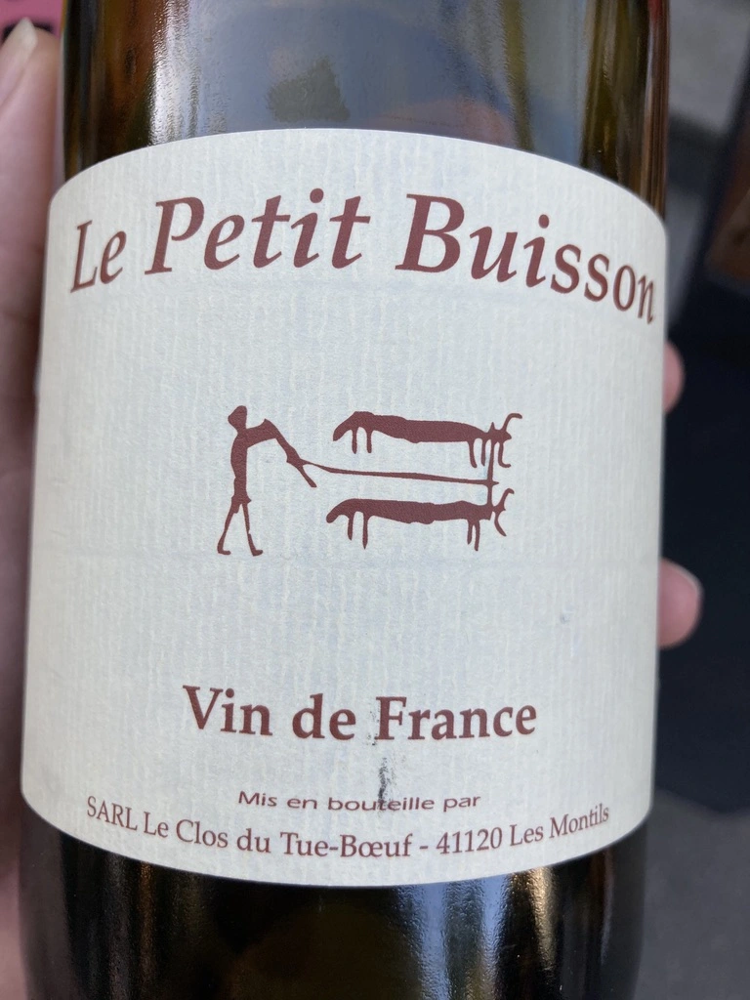
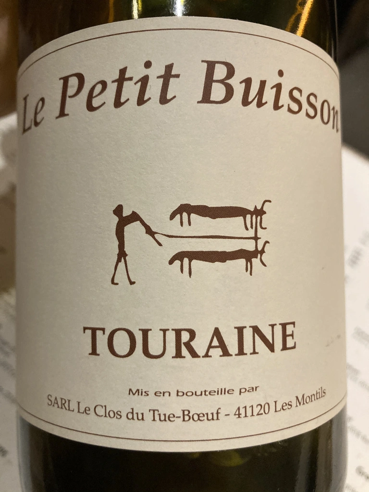
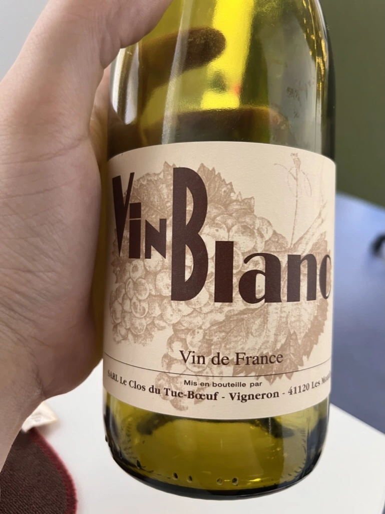
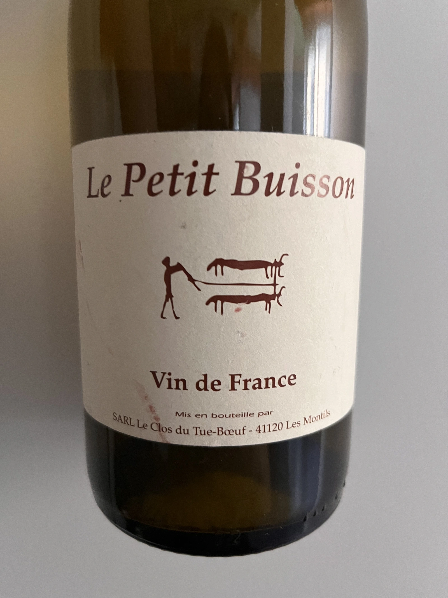
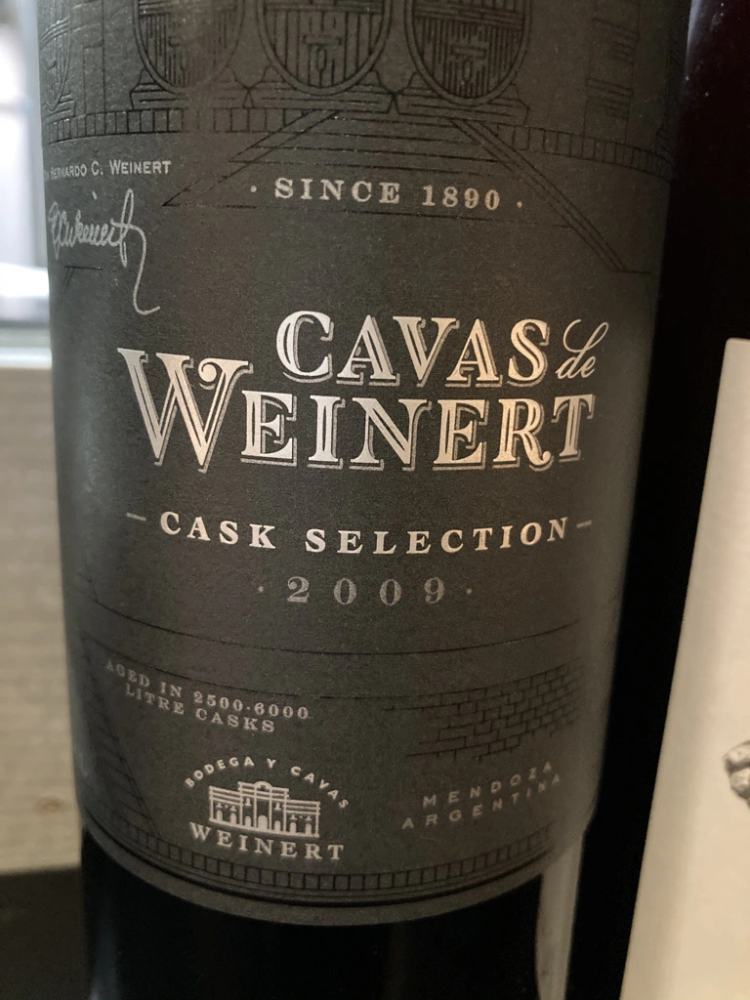
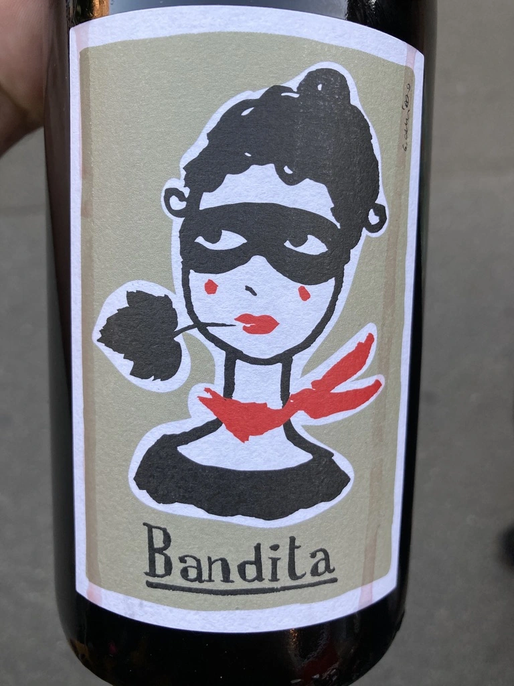
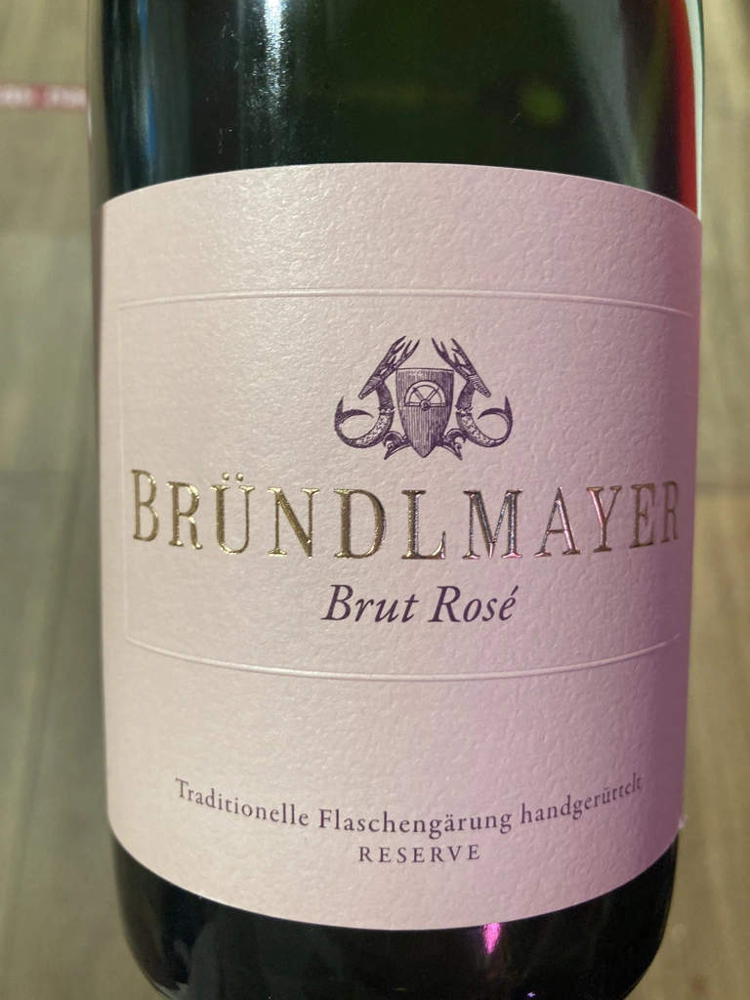

- Type
- White Still, Dry
- Producer
- Clos du Tue-Boeuf
- Vintage
- 2019
- Location
- France, Vin de Table (France)
- Grapes
- Sauvignon Blanc
- Alcohol
- 13.3
- Sugar
- 5.7
- Price
- 560 UAH
- Cellar
- N/A
Producer
Run by Jean-Marie and Thierry Puzelat.
Ratings
2020-09-11 - 7.00
Alright, take some cactus, wrap it with pear candy, smear with honey and sprinkle with black currant leaves. That’s how you get Le Petit Buisson. 2019 is not in the Touraine AOC anymore, but in generic VdF. Hopefully it didn’t make Jean-Marie and Thierry Puzelat cry. After all, they have this bright sweetie to relax.
2020-11-24 - 7.50
Tasting again in two months and it makes a difference. Yellow fruits and bread, yeast and nuts, hints of cactus soaked in acacia honey. You bet, it is aromatic! Acidity is aggressive, but very short. A little bit fizzy at first. Flavours of almonds and peach.
Related






